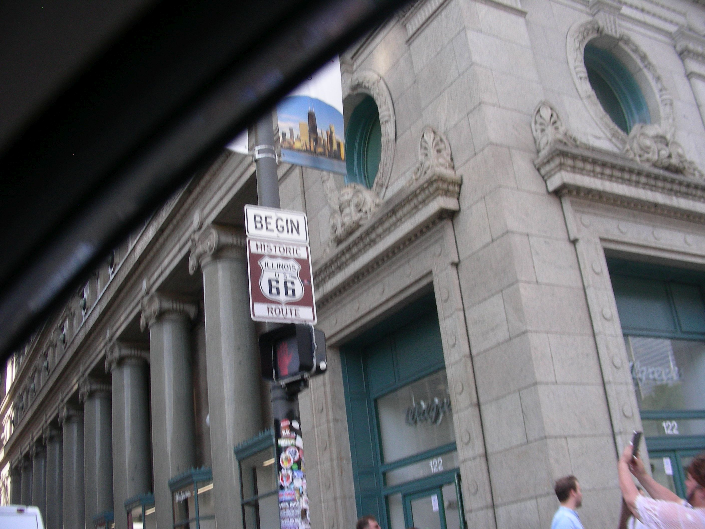
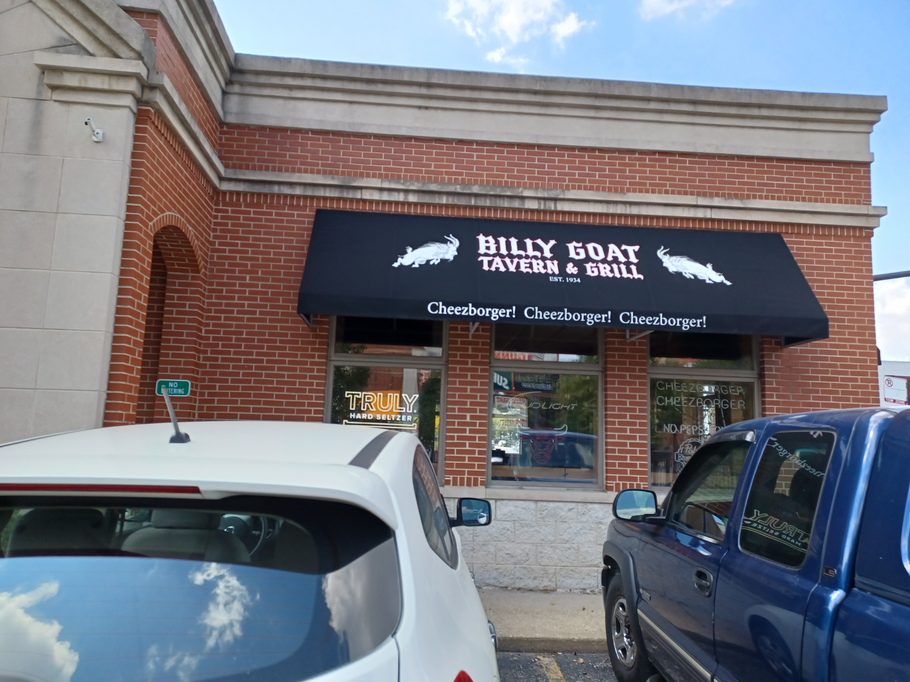
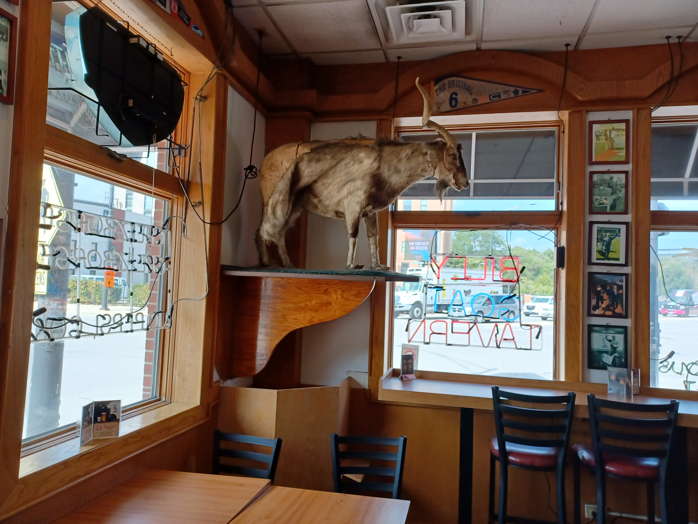
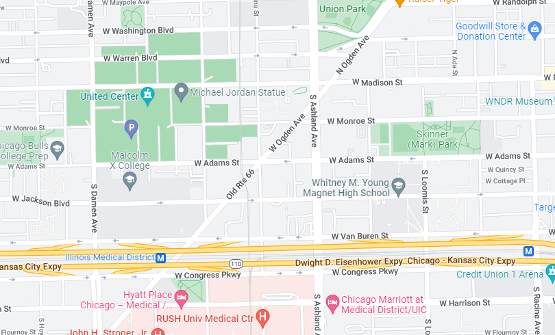
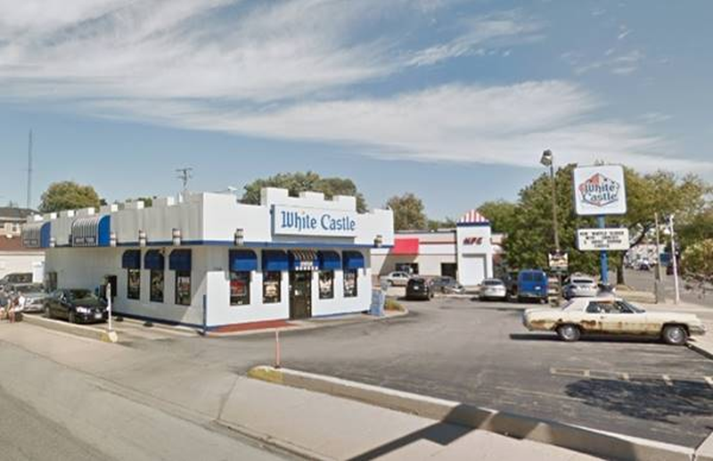
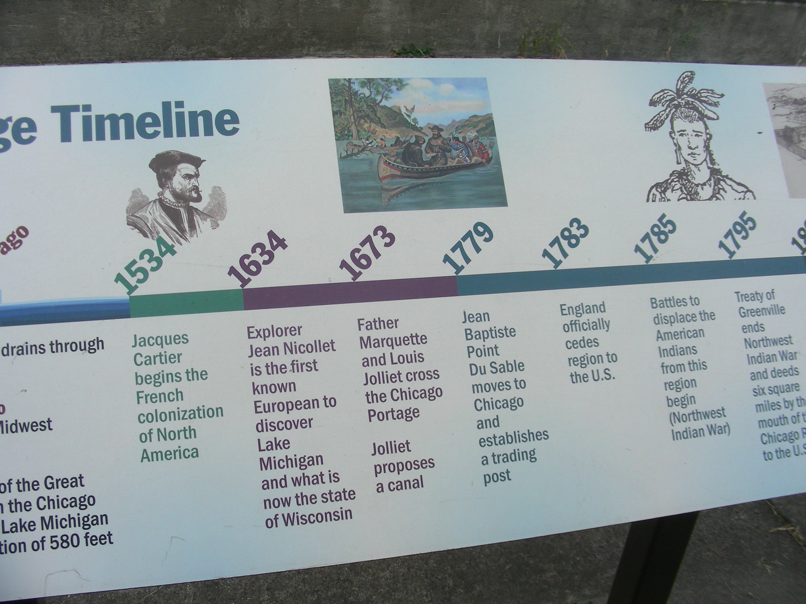
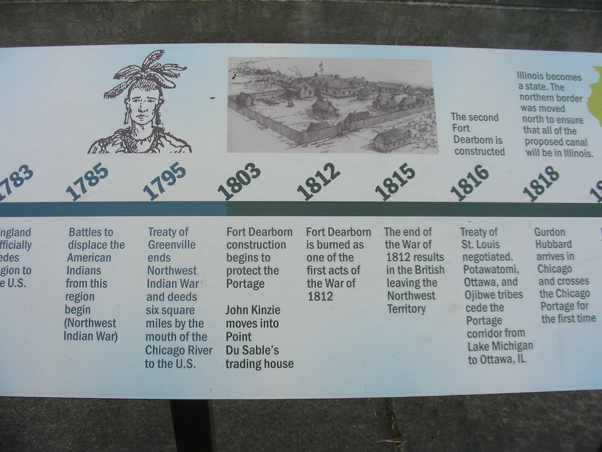
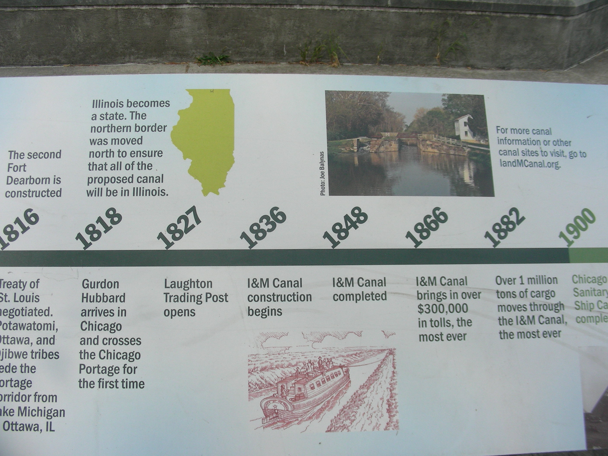
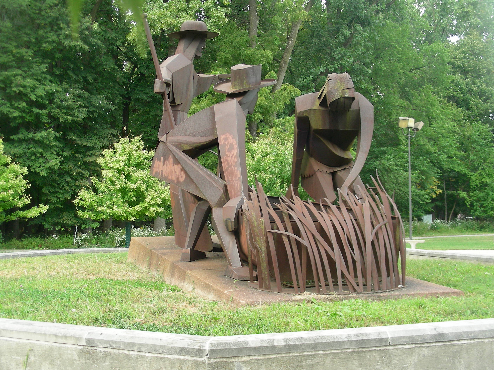

Chicago To Joliet
We began the first leg of our trip on a Saturday in the spring of 2022. We started out at the corner of Michigan and Adams, just across from the famous Chicago Art Institute. (It’s awesome; we’ve been there a few times. Highly recommended!)

From here we traveled west to Canal,(right turn) then north to Madison, then go west(left turn) to the famous Billy Goat Tavern, just before Ashland Avenue.

The Billy Goat Tavern was made famous on the TV show Saturday Night Live in the ‘70’s. (Cheezborger! Cheezborger! Cheezborger!) The location made famous is on Michigan Ave., but the actual original, Billy Goat, was over on Madison , around the United Center area. Then they moved to the Michigan Ave. location, and then built another Billy Goat, close to the original location on Madison Ave. This is the one we went to since it was right on Madison and Ogden, and Ogden is Route66.

We had a couple of Cheezborgers, along with a couple of their craft beers. It was excellent! A real cool place. Then we got on Ogden and headed Southwest to Harlem Ave (7200 West).

Heading down Ogden gives you a different feel of Chicago. It’s somewhat more industrial, and has some good restaurants along the way(Henry’s Drive-In for a classic Chicago Dog, in Cicero). You travel through Chicago, as well as Cicero(Al Capone) and Berwyn. At the end of Ogden on the corner of Ogden and Harlem(northeast corner), is the oldest, original site for the White Castle chain on Route66. Opened in 1939 featuring the famous Hamburgers.

At the end of Ogden, we turned left (south) on Harlem and then would go to Joliet Road and turn right, but we stayed on Harlem to go to a Federal Park I wanted to visit, a little bit farther south down Harlem. I had driven past it many times while working, but could never stop (too busy), so I took this opportunity to check it out.
The name of the Park is The Chicago Portage National Historic Site. It is basically commemorating the exploits of French explorers Louis Joliet and Father Jacques Marquette. Very interesting.




From here, we headed back up Harlem Avenue (north) to Joliet Road and turned left (west) and followed the Route66 signs that go into Interstate 55 South. We took that until we came to the Joliet Road exit and got off on that exit.
This was the end of the first leg of our Adventure. From here we went home and looked forward to our next leg of the adventure, on another Saturday.